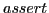
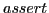
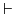
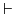
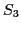
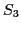

Next: Binary Decision Diagrams (BDDs) Up: Model checking of multicore Previous: Verifying properties of thread Contents Index
Initially logical systems were verified using proof based systems. In proof based verification, system description is represented using a set of formulas  in a suitable logic and specification is represented using another formula . The verification of system is done by finding proof that
in a suitable logic and specification is represented using another formula . The verification of system is done by finding proof that   . As we can see this process is deductive and usually requires human guidance [22,1].
 . As we can see this process is deductive and usually requires human guidance [22,1].
The work done by Vardi and Wolper in [40], provided a way of modelling the program specifications into formulas which can be verified automatically. According to this proposal, once expected behaviours and use cases are decided, all the requirements are written into formal specification, which is mathematical description of the system. The formal specifications are written in Linear time Temporal Logic (LTL) and the LTL logic are verified to check the properties of the system. If the system described using LTL behaves as expected, the system is said to be bug free.
Currently we have techniques to convert programs described in high level programming language to mathematical formulas and automated verification technique to verify the properties of the formulas. The sec:back:cbmc describes more details of converting programs to verifiable mathematical formulas and verification using Bounded Model Checking.
Specifications and program are converted into mathematical formulas and the formulas have to be verified for correctness and/or check for incorrect behaviour. For example consider model checking of state-machine in fig:example:statemachine. The state  can be reached through
can be reached through  and  under the condition
and  under the condition
 . Suppose we want to know if
. Suppose we want to know if  is reachable under certain conditions, which may violate the specification and is an incorrect behaviour. We need techniques to process the formula
is reachable under certain conditions, which may violate the specification and is an incorrect behaviour. We need techniques to process the formula
 and check if it is satisfiable. Such techniques are called decision procedures. Two of the commonly used decision procedures are Binary Decision Diagrams (BDDs) and Satisfiability (SAT) [25]. In previous chapter we have discussed about satisfiability and next section describes BDD briefly.
and check if it is satisfiable. Such techniques are called decision procedures. Two of the commonly used decision procedures are Binary Decision Diagrams (BDDs) and Satisfiability (SAT) [25]. In previous chapter we have discussed about satisfiability and next section describes BDD briefly.